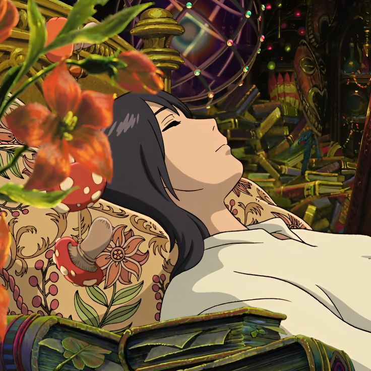
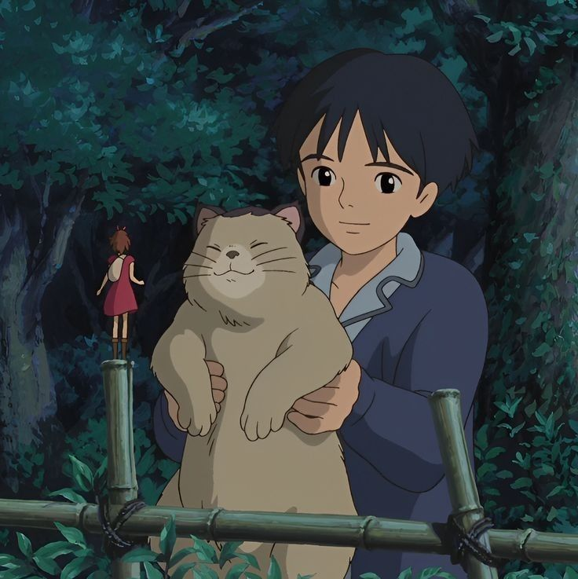
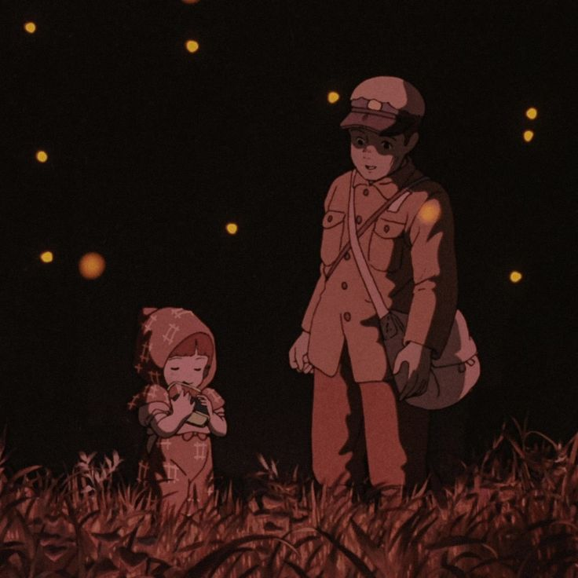

 Howl's Moving Castle is a beloved animated film known for its captivating story and beautiful animation. It transports us to a magical world filled with wizards and enchanted castles. What makes it truly special for me is the way it combines stunning visuals with a memorable musical score, the theme song 'Merry Go Round of Life' will always be my favorite. The characters, especially Sophie and Howl, are relatable and undergo personal growth as they navigate a world impacted by war. The movie also explores important themes like finding one's true self and the consequences of conflict. With its timeless appeal and emotional depth, Howl's Moving Castle is a standout example of Studio Ghibli's storytelling prowess and artistic excellence.
Arrietty is an unexpected and emotionally touching Studio Ghibli film that brings us into a tiny world of tiny borrowers living beneath the floorboards. Directed by Hiromasa Yonebayashi, it beautifully explores themes of friendship, courage, and the wonder of everyday life. The careful attention to detail in showing this small world is captivating, drawing us into the borrowers' lives. The characters, especially Arrietty and Sho, make the story both sad and heartwarming. With its calm storytelling and beautiful animation, Arrietty shows how Studio Ghibli excels at creating stories that appeal to both young and adult audiences.
 Grave of the Fireflies is a unique Studio Ghibli film that tells a powerful and moving story set during World War II. Directed by Isao Takahata, it follows the struggles of two siblings, Seita and Setsuko, as they try to survive in a war-torn Japan. What sets this film apart is its raw and emotional portrayal of the harsh realities of war, showing the impact it has on ordinary people, especially children. It doesn't shy away from depicting the hardships and heartbreak they face. The film's honesty and emotional depth make it stand out for me. It's important to note that Grave of the Fireflies is not available on Netflix, which adds to its uniqueness and makes it a film worth seeking out.
Studio Ghibli has 22 movies out now, most of them are available to watch on Netflix. Hayao Miyazaki announced that his last movie is coming out this December, on my birthday.